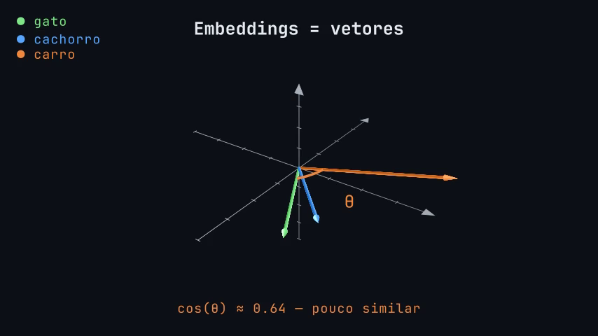

Semana 8 - Embeddings, Similaridade e RAG
Esta semana juntamos dois temas que são duas faces da mesma moeda: como fazer um agente "ler" documentos (RAG) e como representar texto como números (embeddings). Começamos pelo problema, passamos pela busca lexical (BM25), pela busca semântica (embeddings), pela busca híbrida, e terminamos com engenharia real.
O problema: LLMs não sabem tudo
LLMs não conhecem seus documentos pessoais, PDFs da empresa, notas privadas, nem informações recentes (pós-treinamento).
Precisamos de uma forma de buscar informações relevantes e entregá-las ao LLM antes de ele gerar a resposta.
RAG: o agente que lê documentos
RAG (Retrieval Augmented Generation) resolve isso: buscar informações relevantes antes de gerar a resposta.
"RAG = buscar antes de responder."
Analogia
- Sem RAG: aluno fazendo prova de memória
- Com RAG: aluno fazendo prova com livro aberto
Fluxo RAG
- Chunking → divide documentos em pedaços menores
- Embeddings → transforma cada pedaço em vetor
- Vector Store → guarda os vetores num banco de dados
- Retrieval → busca os pedaços mais relevantes
- Generation → LLM recebe a pergunta + os pedaços encontrados e responde
Documento → Chunks → Embeddings → Vector Store
↓
Usuário pergunta ↓
↓ ↓
Pergunta → Embedding → Busca similar → Chunks relevantes
↓
LLM recebe pergunta + chunks
↓
Resposta
O retrieval é o coração do RAG. E a busca tem duas abordagens que se complementam: busca lexical e busca semântica.
Busca Lexical: BM25
"Como o Google buscava antes de IA."
BM25 (Best Matching 25) é o algoritmo de busca lexical mais usado. Está no Elasticsearch, no Lucene, no Sphinx — e é mais inteligente do que parece.
A fórmula
\[\text{score}(q, D) = \sum_{i} \text{IDF}(q_i) \cdot \frac{f(q_i, D) \cdot (k_1 + 1)}{f(q_i, D) + k_1 \cdot \left(1 - b + b \cdot \frac{\text{fieldLen}}{\text{avgFieldLen}}\right)}\]
Parece assustador, mas cada parte é bom senso. Vamos decompor:
IDF — Inverse Document Frequency
\[\text{IDF}(q_i) = \log\left(1 + \frac{\text{docCount} - \text{docFreq} + 0.5}{\text{docFreq} + 0.5}\right)\]
docCount= total de documentos que têm valor no campodocFreq= quantos documentos contêm o termo de busca
O IDF "penaliza" termos comuns. Se você busca "the elephant", "elephant" é muito mais informativo que "the" — porque "the" aparece em quase todo documento em inglês.
Termos raros são mais informativos.
f(qi, D) — Frequência do termo no documento
Quantas vezes o termo de busca aparece no documento. Mais aparições = provavelmente mais relevante. Um documento que menciona "gato" 3 vezes provavelmente tem mais a ver com gatos que um que menciona uma vez.
k₁ — Saturação da frequência
Controla como a frequência do termo satura. A 1ª menção vale muito, a 2ª vale um pouco menos, a 10ª vale quase nada extra.
Um documento que diz "gato" 100 vezes não é 100× mais relevante que um que diz 1 vez — a contribuição se aproxima de uma assíntota.
Default no Elasticsearch: k₁ = 1.2.
k₁ = 0→ só IDF importa, frequência é ignoradak₁ alto→ cada ocorrência adicional continua somando bastante
Documentos longos e diversos (livros) pedem k₁ maior. Documentos curtos (notícias) pedem k₁ menor.
b — Normalização por tamanho do documento
Controla quanto o tamanho do documento afeta o score.
b = 0→ tamanho não importab = 1→ tamanho importa muito- Default:
b = 0.75
Um tweet que menciona "gato" uma vez é mais relevante que um livro de 300 páginas que menciona "gato" uma vez.
fieldLen / avgFieldLen — Tamanho relativo
Tamanho do documento dividido pela média de tamanho dos documentos. Se um documento é maior que a média, o score diminui; se é menor, aumenta.
Isso é o "bom senso codificado em matemática."
Resumo do BM25
- IDF: termos raros valem mais
- f(q,D): mais aparições = mais relevante
- k₁: saturação (a 100ª menção não vale 100× mais)
- b: tamanho do doc importa (ou não)
- fieldLen/avgFieldLen: normalização por tamanho
BM25 é bom pra: nomes, termos técnicos, códigos, IDs. Mas não entende sinônimos ou paráfrases.
Busca Semântica: Embeddings
E se a pessoa busca por "animal que faz miau" mas o documento diz "gato"? BM25 não acha. Mas embeddings sim.
Cada texto vira um vetor — uma lista de números que captura o significado do texto. Textos com significado parecido ficam próximos no "espaço vetorial".
Exemplo visual

Três palavras como vetores no espaço:
- 🟢 gato e 🔵 cachorro apontam em direções muito parecidas — ângulo pequeno, cos(θ) ≈ 0.97 = muito similar
- 🟠 carro aponta em outra direção — ângulo maior, cos(θ) ≈ 0.64 = pouco similar
Quanto menor o ângulo entre os vetores, mais parecidos são os significados.
Espaço vetorial
- Textos com significado parecido = setas na mesma direção
- Textos com significado diferente = setas em direções diferentes
- "Mesma direção" = ângulo pequeno entre elas
Similaridade por Cosseno
Conexão com Geometria Analítica!
\[\cos(\theta) = \frac{\vec{A} \cdot \vec{B}}{|\vec{A}| \cdot |\vec{B}|}\]
- ângulo = 0° → cosseno = 1 → idênticos (mesma direção)
- ângulo = 90° → cosseno = 0 → independentes (sem relação)
- ângulo = 180° → cosseno = -1 → opostos (rei/rainha, sim/não)
Matryoshka Embeddings
Embeddings que podem ser truncados.
- Normal: 768 dimensões fixas
- Matryoshka: 768, 512, 256, 128… (flexível)
Vantagem: economiza espaço e tempo. Analogia: bonecas russas — cada uma contém a próxima, mas qualquer tamanho já funciona.
Como escolher um modelo de embedding?
Critérios práticos:
- Dimensões: mais dimensões = mais informação, mas mais lento
- Tamanho do modelo: menores = mais rápido, menos preciso
- Linguagem: modelos específicos vs multilinguais
- Licença: MIT/Apache = livre pra usar
- Matryoshka: flexível pra diferentes tamanhos
Exemplos:
all-MiniLM-L6-v2— 384 dim, leve, multilinguebge-m3— 1024 dim, multilingue, open-weightnomic-embed-text— 768 dim, longo contexto, open-weight, Matryoshkagte-Qwen2— variedade de tamanhos, Matryoshka
O melhor modelo é o que funciona pra o seu caso. Teste antes de otimizar.
Busca Híbrida: o melhor dos dois mundos
- BM25 acha termos exatos (nomes, códigos, IDs)
- Embeddings acham significados (paráfrases, sinônimos, conceitos)
Por que não usar os dois?
RRF (Reciprocal Rank Fusion) junta os rankings das duas buscas:
\[\text{RRF}(d) = \sum_{m \in \text{métodos}} \frac{1}{k + \text{rank}_m(d)}\]
Cada método ordena os documentos. O RRF combina as posições — documentos que aparecem bem em ambos sobem.
Cada método vê um lado. Juntos, veem mais.
Demo prática: FAISS
Vamos ver isso funcionando de verdade no Colab!
- Modelo:
nomic-embed-text-v2-moe(256 dim, Matryoshka) - Vector store: FAISS (Facebook AI Similarity Search)
- Agente:
gemma4:e2b-it-qatcom ferramenta de busca
O notebook carrega ~20 fatos sobre filosofia e computação, gera embeddings, indexa com FAISS, e mostra:
- Busca semântica: pergunta → embedding → FAISS → resultados formatados
- Agente RAG: agente com ferramenta de busca → LLM busca e combina fatos
Sobre o FAISS
FAISS (Facebook AI Similarity Search) é uma biblioteca da Meta para busca de similaridade em vetores densos. É rápida, simples, e funciona bem em memória.
import faiss from sentence_transformers import SentenceTransformer model = SentenceTransformer('nomic-ai/nomic-embed-text-v2-moe') vetores = model.encode(documentos, truncate_dim=256) # 256 dim (Matryoshka!) index = faiss.IndexFlatL2(256) # cria índice index.add(vetores) # adiciona vetores query = model.encode(["animal que faz miau"], truncate_dim=256) distancias, indices = index.search(query, k=3) # busca os 3 mais próximos
FAISS não é um banco de dados de verdade — não persiste, não tem metadata, não tem busca híbrida nativa. Mas para uma demo conceitual de "embeddings → vector store → retrieval", é ideal.
Engenharia na prática: Sprachspiel
Como essas ideias aparecem num projeto real?
Sprachspiel — harness de interação cognitiva com LLMs.
Memória persistente
- Fatos, notas, documentos com busca semântica
- Decay Ebbinghaus: memórias "esquecem" com o tempo
- Relembrar = reforçar a memória
- Esquecer = natural, não é bug
SOUL.md — personalidade do agente
- Arquivo que define quem o agente é
- Tom de voz, valores, estilo de resposta
- Não é só system prompt — é identidade persistente
Busca híbrida real
- BM25 (lexical) + vetores (semântica) + RRF (fusão)
- O agente não escolhe uma — usa as duas juntas
É exatamente o que vimos: BM25 + embeddings + RRF. Sem mágica — só engenharia.
🔥 Pontos Extras (para reflexão)
1. Similaridade não é 1.0 nem aleatória — é interpretável
No Teste 2 do notebook, a busca por Church-Turing retornou similarity = 0.82, enquanto a busca por Spinoza retornou 0.64. O que isso significa?
- 0.82 = o embedding da query está muito próximo do embedding do fato (conceitos específicos, nomes técnicos)
- 0.64 = o embedding está moderadamente próximo (termos mais abstratos, filosóficos)
Embeddings não são busca exata nem adivinhação — a similaridade por cosseno dá um número que pode ser usado como threshold (ex: "só mostre resultados acima de 0.7").
Pergunta extra: Em qual situação uma similarity baixa (ex: 0.4) poderia ser útil?
2. O agente busca em inglês e responde em português
Os fatos estão em inglês, mas o system prompt obriga o agente a responder em português. O agente:
- Lê a pergunta em português
- Traduz mentalmente a query para inglês ao chamar a ferramenta
- Recupera fatos em inglês
- Reformula a resposta em português
Isso mostra que embeddings são cross-linguais — o significado transcende o idioma. E prova que o LLM está compreendendo, não copiando.
Pergunta extra: O que aconteceria se os fatos estivessem em português e o agente fosse instruído a responder em inglês? Funcionaria igual?
3. O system prompt força a busca — sem ele, o LLM responde de memória
No notebook, o system prompt diz explicitamente: "NEVER answer from your own knowledge" e "ALWAYS use searchfacts before answering". Sem isso, o Gemma 4 pode simplesmente responder direto, sem buscar nada.
Isso é o coração do RAG: o LLM tem conhecimento nos pesos, mas não confiamos nele. O RAG substitui a confiança nos pesos por confiança no retrieval.
Pergunta extra: Por que "confiar nos pesos" é problemático? Dê um exemplo de quando o LLM poderia alucinar sem buscar.
4. O agente faz múltiplas buscas e combina resultados
No Teste 2, o agente chamou a ferramenta duas vezes — uma para Church-Turing, outra para Spinoza — e depois sintetizou uma análise comparativa. Isso é o ciclo Thought → Action → Observation repetido, automaticamente, pelo create_agent.
O agente não recebeu instrução de "busque duas vezes". Ele decidiu sozinho, com base na pergunta, que precisava de duas buscas.
Pergunta extra: Como o agente decidiu que precisava de duas buscas em vez de uma? O que na pergunta sugeriu isso?
5. RCEF-TC no system prompt: quando cortar E e F
O system prompt do agente usa R (Role) e C (Context), mas corta E (Examples) e F (Format). Por quê? Porque o Gemma 4 E2B é um modelo pequeno — um system prompt muito longo reduz a qualidade das respostas. Num modelo maior (30B+), valeria a pena adicionar exemplos de buscas boas vs ruins e definir o formato de saída.
Isso é engenharia de prompt aplicada: o framework RCEF-TC é um guia, não uma checklist rígida. Cada decisão de corte tem um porquê.
Pergunta extra: Se você fosse usar um modelo de 70B+ para o mesmo RAG, quais elementos do RCEF-TC você adicionaria de volta?
Resumo
- RAG = buscar antes de responder (chunking → embeddings → retrieval → generation)
- BM25 = busca lexical (IDF, frequência, saturação k₁, normalização b, tamanho relativo)
- Embeddings = texto como vetores (similaridade por cosseno)
- Matryoshka = embeddings flexíveis em tamanho
- Busca híbrida = BM25 + embeddings + RRF
- FAISS = vector store rápido e simples para demo
- Sprachspiel = tudo isso junto num projeto real
Próxima semana
Semana 9 - Apresentação final: hora de mostrar os projetos!